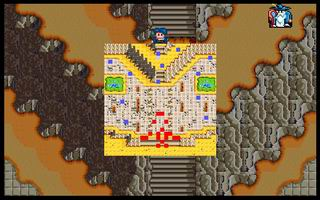

第十章 古代遗迹

 雷特
雷特 米兰
米兰 克隆
克隆 艾利欧
艾利欧 巴拉多
巴拉多 洛加
洛加 希瓦那
希瓦那 卡里斯
卡里斯 莱特
莱特 凯亚
凯亚 莉娜
莉娜 索尼克
索尼克
本关敌人：
 LV12 萨亚 （HP720,AP276,DP174,HIT126,EV26,MV3）
LV12 萨亚 （HP720,AP276,DP174,HIT126,EV26,MV3）
 LV9 精锐队骑士x4 （HP420,AP144,DP49,HIT98,EV18,MV7）
LV9 精锐队骑士x4 （HP420,AP144,DP49,HIT98,EV18,MV7）
 LV8 精锐队步兵x4 （HP420,AP136,DP109,HIT106,EV16,MV4）
LV8 精锐队步兵x4 （HP420,AP136,DP109,HIT106,EV16,MV4）
 LV8 精锐队弓兵x4 （HP300,AP152,DP46,HIT114,EV24,MV4）
LV8 精锐队弓兵x4 （HP300,AP152,DP46,HIT114,EV24,MV4）
 LV8 魔法师x3 （HP200,AP80,DP56,HIT94,EV29,MV4,激电冲）
LV8 魔法师x3 （HP200,AP80,DP56,HIT94,EV29,MV4,激电冲）
 LV8 僧侣x2 （HP360,AP80,DP107,HIT78,EV18,MV3,灵疗术）
LV8 僧侣x2 （HP360,AP80,DP107,HIT78,EV18,MV3,灵疗术）
胜利条件：敌人全灭
失败条件：雷特死亡
战后加入：
 LV10 武者 红武圣 （HP1200,AP500,DP160,HIT130,EV60,MV5,村正刀,武者铠甲）
LV10 武者 红武圣 （HP1200,AP500,DP160,HIT130,EV60,MV5,村正刀,武者铠甲）
战后报酬：
$4400G/$13200G
攻略简要：
敌人一开始便全数往己方人员移动，而己方人员四处分散，所以要尽速往楼梯口方向聚集。右边的卡里斯和巴拉多一定要去支持莉娜撤退，不然可能会被敌方骑兵打死。希瓦那可去左边支持凯亚，其他人往中央聚集，但要算好萨亚的攻击距离，等他靠近时，米兰和索尼克也赶到了，可以一回合做掉他。对于魔法师，尽可能不要进入激电冲的五格攻击距离内，不然就要将他秒杀。
战后商店道具:
武器： |
防具： |
道具： |
剧情对话：
艾利欧:在这种鬼地方真能找到三武圣吗?
莉娜:根据我所知道的消息，他们曾经在此处出现过。不过你们为什么想要寻找他们呢?
索尼克:为了协助雷特复国，我们必须借重三武圣的力量，才能有足够的能力，来对抗哈奇手下的军队。
莱特:不过三武圣不是远古神话中的传奇人物吗?他们真的存在这个世界上?
索尼克:他们不仅存在，而且还指导过我。虽然这段期间不是很长，但是我因而受益良多。后来他们突然失去踪影，从此再也没有见面了。
米兰:照这么说来，如果我们能够找到三武圣的话，那雷特大哥就能够达成复国心愿了!
索尼克:此话不错。只是此地相当辽阔，不知要如何找起..
凯亚:咦!有一队人马出现..
萨亚:你们可是雷特等叛党一行人?
巴拉多:是哈奇的手下!他们怎么会知道我们来到此地?
萨亚:嘿嘿...看来就是你们几个了...将他们全部一网打尽!
与萨亚展开了战斗。
萨亚：嘿...反正我活不成了...就带你们...一起到地狱吧!
索尼克:是...是赤神珠!使用它的话，在数十尺之内的人，都会被炸得粉碎!大家快避开!
萨亚:来不及了...死吧!
(萨亚的手臂被削断)
萨亚:哇啊!...是...是谁...可恶...
索尼克:是红武圣!终于找到三五圣之一了...
红武圣:你是雷特吧?有关你的事，我都已经知道了...是索尼克带你来的吧?
索尼克:是的，红武圣师父，你是否愿意协助我们呢?
艾利欧:嘻嘻!这个红武圣的年纪，看起来也大不了我多少，为什么圣者会尊称他为师父?
克隆:你懂什么?红武圣看来虽然很年轻，但实际上已经活了数百年之久了，而且圣者也受过他们的指导，自然对他们十分地尊崇。
红武圣:嗯...也好，就算是缘分吧!正巧我有些事必须与你们同行。不必问我是什么事，反正到时候你们就会明了了。
索尼克:既然如此，我们一定照办。
红武圣:我另外两名伙伴，已经前往马拉山上的天湖了。若你们想要寻找他们，就往天湖去吧!
雷特:这样的话，那我们就往天湖出发吧!
第十章完